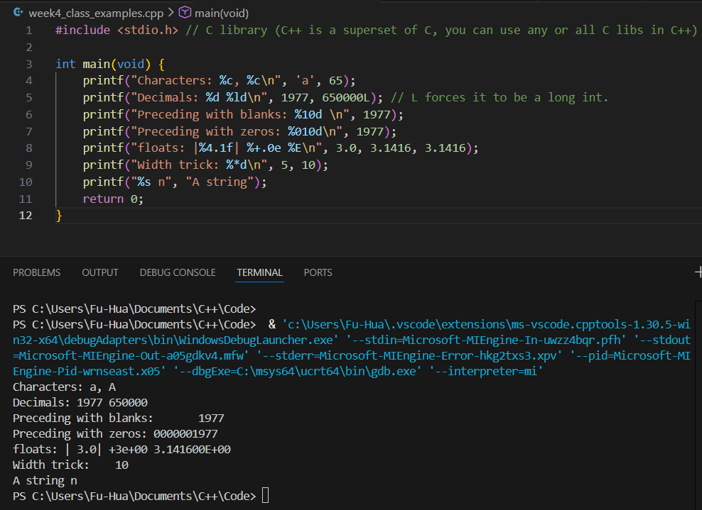
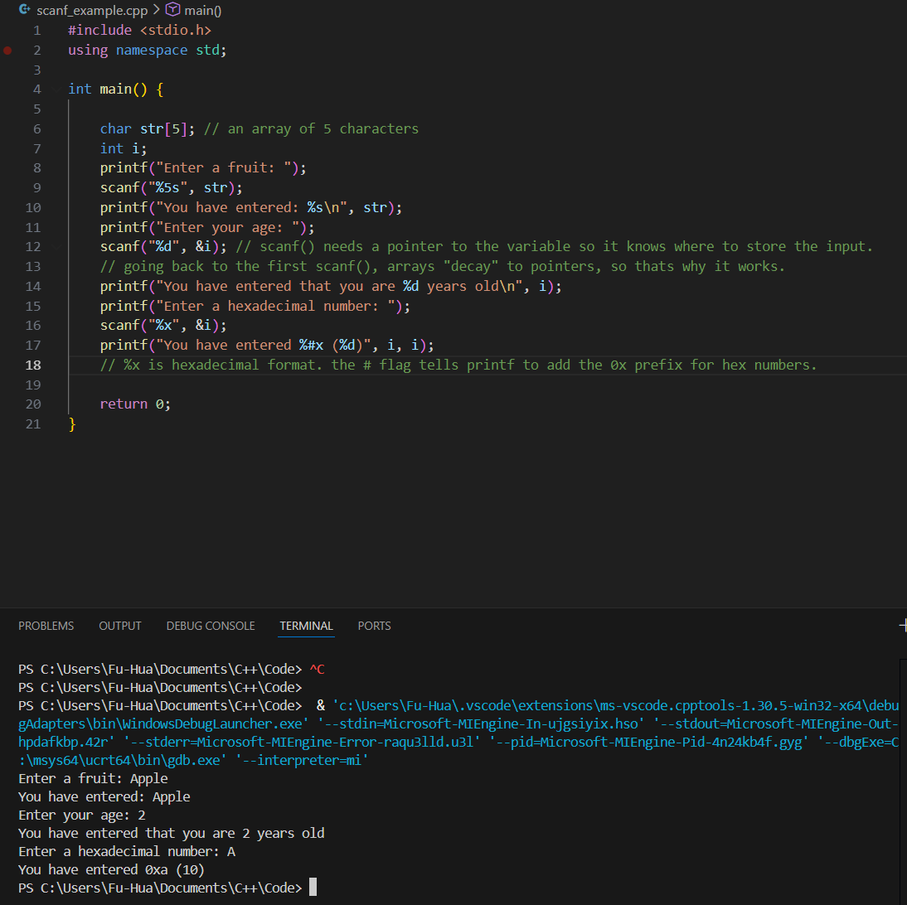
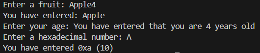

C-style
To work with c-style strings:
- #include <cstring> or
- #include <stdio.h>
- C-style strings have a lot of advatanges, one being its efficient
- printf()
- %[flag][width][.precision][length]specifier ***important for exam***
- Works like Java
- scanf()
- Is for getting data from the user's keyboard into the program
Examples
printf():

scanf():

Notice when I input more characters than 5, the remaining overflows to the next scanf().

strings and c-strings
- C++ string is an object that has methods and stores data.